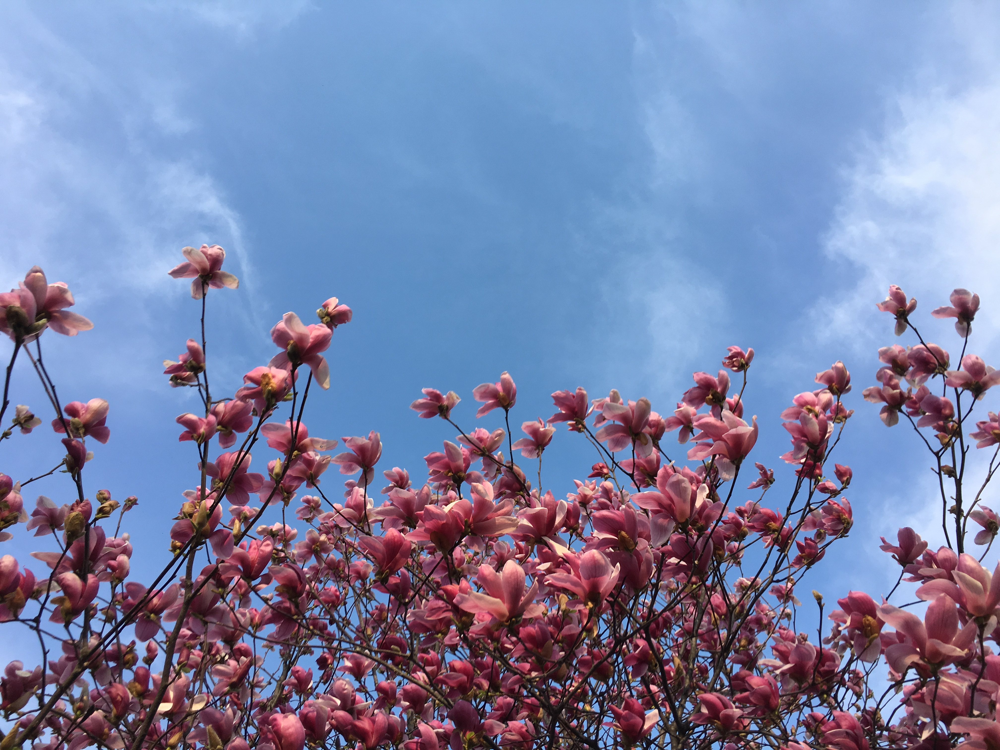
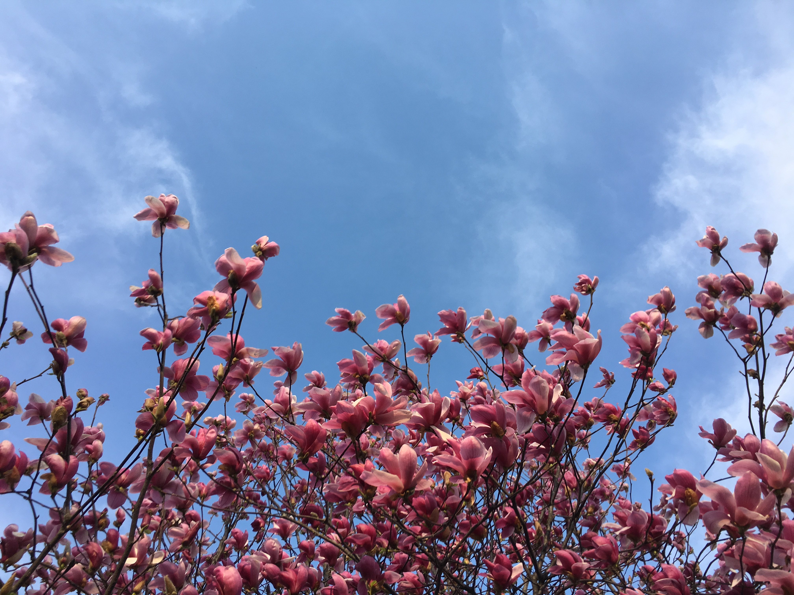
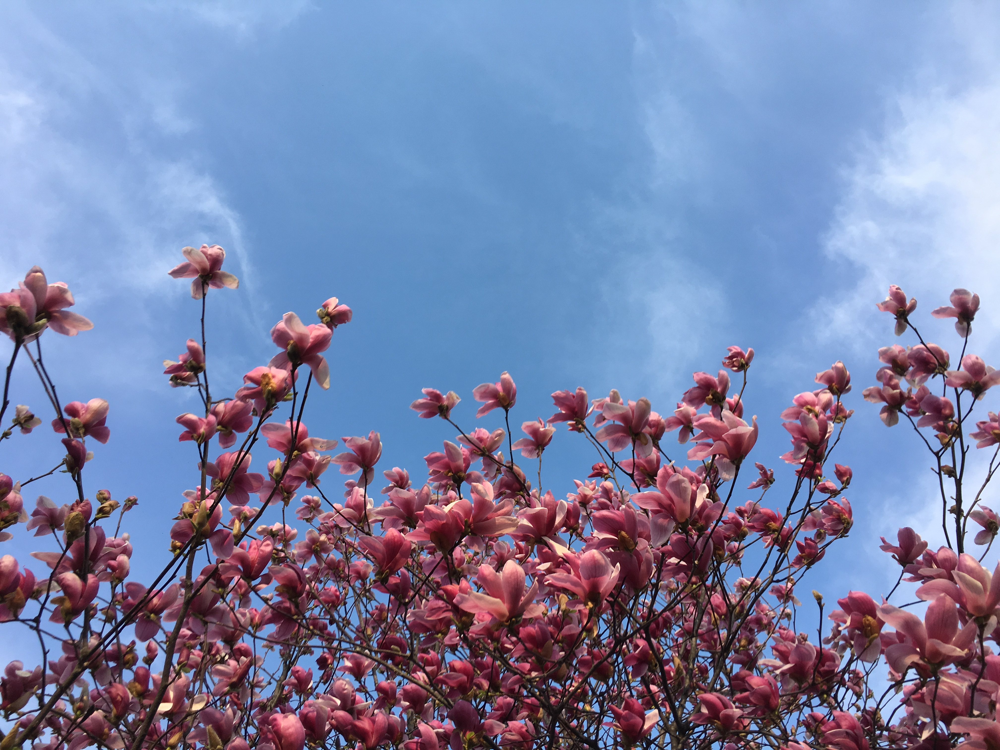

This is my forst home page inhoon. 2019,4,14. start runing !!!

백목련(白木蓮, Magnolia denudata)은 목련과에 딸린 큰키나무이다. 중국에 중부, 동부에 자생한다.[1] 기원후 600년 이후로 중국 사찰의 마당에서 경작되어왔다. 당나라에서는 깨끗함의 상징으로 간주되어 황제가 거하는 궁전의 토지에 심었다. 종종 백란으로 불리기도 하며, 상하이의 공식 도시꽃이기도 하다.
목란(木蘭)·자옥란(紫玉蘭)·자옥련(紫玉蓮)·두란·목필·가지꽃나무라고도 한다. 나무의 높이는 대개 3~4m 정도로 관목처럼 보이는 것이 많으나 생육이 좋은 것은 15m까지 자란다. 흔히 절간과 정원에 많이 심는다. 이와 비슷하게 보이는 변종인 자주목련은 꽃잎의 겉이 연한 홍자색이고 안쪽이 백색이다. 나무껍질은 목란피(木蘭皮), 꽃은 목란화(木蘭花)라 한다. 방향성이 있다. 관상용·약용으로 이용된다. 약으로 쓸 때는 탕으로 하거나 환제 또는 산제로 하여 사용한다. 외상에는 가루를 내어 쓴다.